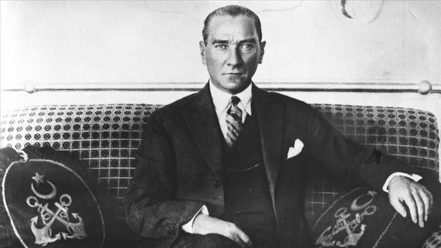
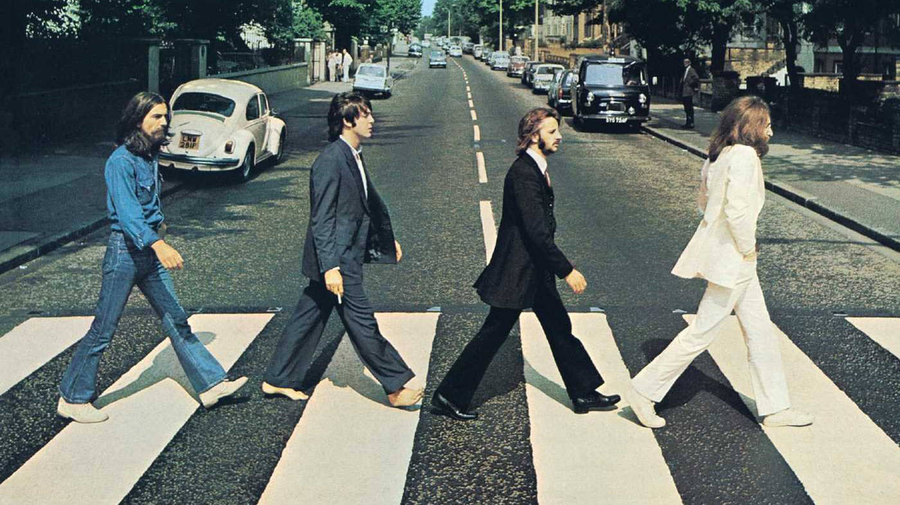
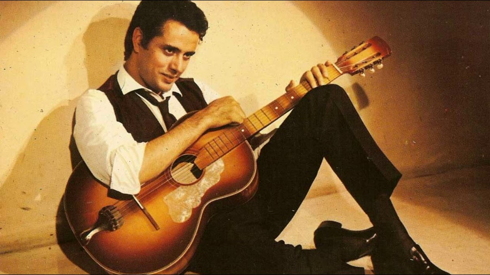

Background (1930s-1960s)
Anatolian rock has a long history that dates back to the founding of the Turkish Republic decades ago. Modern Turkey's founding father, Ataturk, pushed extensive changes to build a national form of music from the early 1930s forward.
Ataturk believed that the changes in music to be based on national and modern foundations and musicians should work on Turkish melodies and make them polyphonic according to the rules of Western harmonic music. As a result, Anatolian folk music began to spread and people began to listen Anatolian folk tunes instead of Ottoman music.
In the 1950s, rock & roll music began to be played and rock groups such as The Beatles, The Rolling Stones, Led Zeppelin, Yes, Status Quo and Omega became popular especially in Istanbul. It began to spread and became popular among the elite youth of the city.
In Istanbul, high school and university students began forming their own bands and performing covers of rock'n roll and twist music in 1957. Students which will become famous singers later, such as Baris Manco from Galatasaray High School and Erkin Koray from German High School, they both performed at an amateur concert they have organized, which is known as the first rock'n roll concert of Turkey.
Turkish singers such as Erol Buyukburc began to release English-language cover versions of American songs, as well as their own songs.